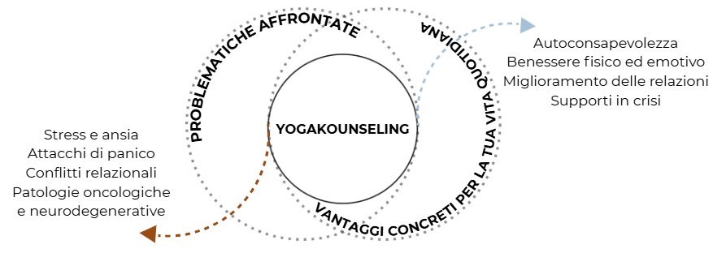

Scopri il potere dello YogaKounseling
Che cos'è lo YogaKounseling®?
Lo YogaKounseling è uno strumento innovativo che unisce la tecnologia del Kundalini Yoga e del Counseling. È un percorso individuale che ti aiuta a superare un momento di difficoltà utilizzando le tue risorse. Il Counseling ti aiuta a decidere responsabilmente nel rispetto dei tuoi sentimenti e del tuo vissuto, con i tuoi tempi e nel rispetto dei tuoi desideri. Il Kundalini Yoga, attraverso posture, tecniche meditative ed esercizi di respirazione, permette di lavorare inconsapevolmente sui blocchi e le resistenze, migliorando la salute e la qualità della vita.
Perchè lo YogaKounseling può aiutarti?
